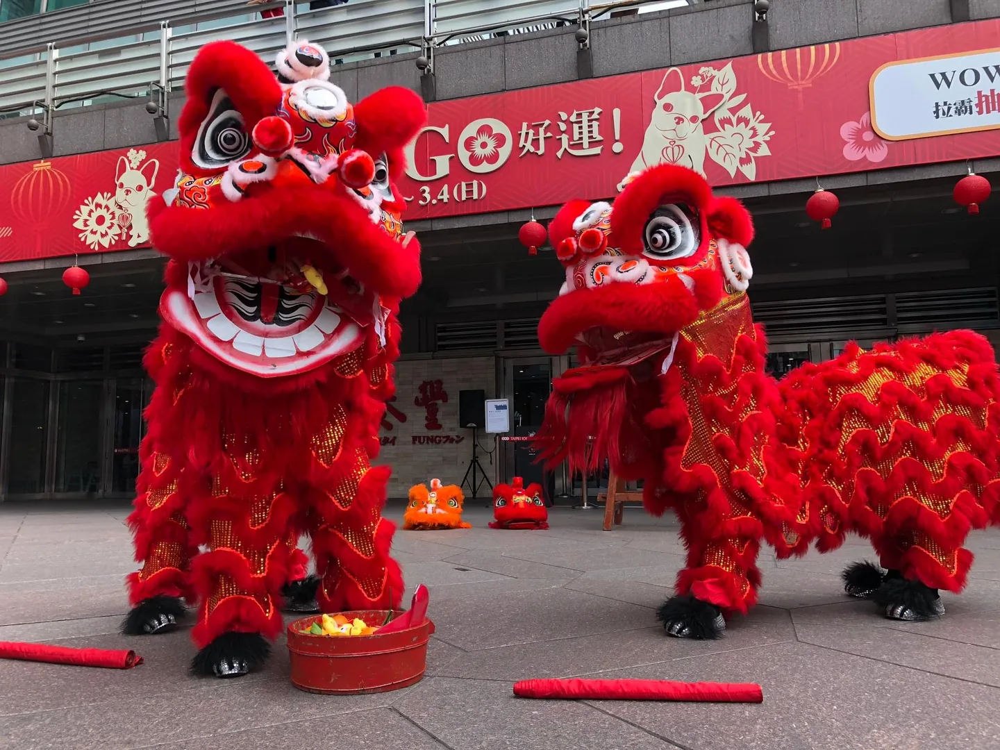
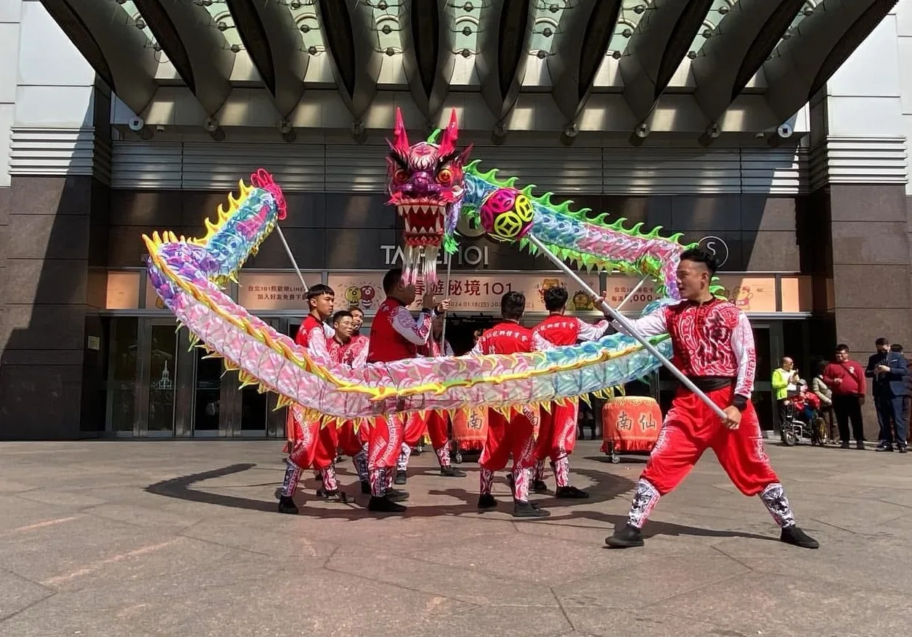

舞獅 / LION DANCE
靈動近人，讓祝福走進觀眾之間
舞獅以眨眼、抖鬃、探路、採青與跳躍展現獅子的神情。觀眾能近距離感受牠的喜怒與節奏，特別適合開幕迎賓、商場活動、春酒尾牙與新春場合。
- 核心人數
- 每頭獅 2 人
- 場地彈性
- 室內外皆可
- 適合場合
- 開幕・迎賓・春酒
DRAGON & LION DANCE CULTURE
文化精神
舞龍舞獅不只是熱鬧的表演。從點睛、起鼓到採青納福，每個動作都承載著開啟新局、凝聚人心與迎祥納福的文化心意。
以硃砂點睛，讓獅子由靜入動，象徵甦醒、開啟與一個新的開始。
鼓、鑼、鈸把節奏聚在一起，也把表演者、觀眾與整個場域的精神帶起來。
採青、吐聯與龍珠引路，把祝福帶進活動與人群，留下圓滿、興旺的寓意。
舞龍與舞獅
兩者同樣象徵吉祥與力量，呈現方式卻很不同。舞獅著重表情、步法與近距離互動；舞龍則以隊形與流動感鋪陳大型場域的氣勢。

舞獅 / LION DANCE
舞獅以眨眼、抖鬃、探路、採青與跳躍展現獅子的神情。觀眾能近距離感受牠的喜怒與節奏，特別適合開幕迎賓、商場活動、春酒尾牙與新春場合。

舞龍 / DRAGON DANCE
舞龍由龍珠引路，舞者以盤旋、穿梭、翻騰與高低起伏，讓整條龍像活起來一樣流動。隊形視覺張力強，適合節慶主秀、戶外廣場、遊行繞境與大型開場。
醒獅演出流程
每場演出會依活動流程、場地大小與儀式需求調整；以下是一場經典醒獅演出的常見節奏。
主禮嘉賓為獅頭點睛，象徵喚醒精神、開啟新局。
鼓、鑼、鈸一同起奏，建立演出節奏並凝聚全場目光。
醒獅以試探、眨眼、跳躍與互動，展現靈性與技藝。
完成採青與吐聯，把興旺、圓滿的祝福送給主辦方。
常見問題
演出內容會依場地、流程與檔期安排。先掌握基本條件，就能更快找到合適的演出形式。
「青」通常以紅包與生菜綁成。獅子透過探路、試探與跳躍後採下，象徵開市大吉、生意興隆與財源廣進，是開幕與開工儀式中很受歡迎的環節。
演出前以硃砂為獅頭點睛，象徵獅子甦醒有靈並正式揭開序幕。點睛通常由主辦方的重要人物主持，具有祝福與開啟新局的意義。
舞獅通常一頭獅由兩人操作，再加上鑼、鼓、鈸樂手；舞龍則依龍身節數需要多位舞者，並由龍珠在前引導。實際人數會依演出內容與場地安排。
常見演出長度約十五至三十分鐘，包含開場、主秀、互動與收勢。也可以依活動流程調整成精簡開場，或加入戰鼓、藝陣的完整版本。
可以。舞獅適合多數室內外場地；舞龍因需要展開身長與變換隊形，較適合戶外廣場或挑高的大型室內空間。洽詢時提供場地尺寸，我們會協助判斷。
建議至少提前二至四週洽詢；農曆春節前後為旺季，建議提前一至二個月確認檔期。準備活動日期、地點、類型與場地大小即可開始討論。